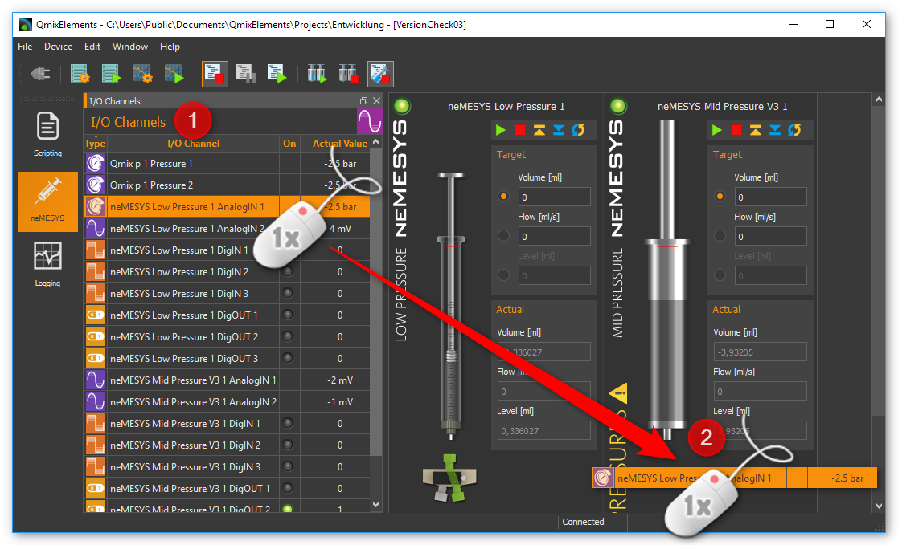

Pressure Monitoring
Caution
Dosing with Nemesys pumps can create high pressure levels, which may cause damage to syringes, the fluidic system or the application. To prevent this from happening, you should monitor the pressure in your system, manually or automatically, using pressure sensors.
Assigning Pressure Sensors
You can assign a pressure sensor to each pump. This sensor will then be displayed on the pump’s front panel and can be used for automatic pressure monitoring. The pressure sensor does not have to be electrically connected to the pump. You can use any sensor displayed in the I/O channel list (see image below).

Tip
To use any analog input as a pressure measuring input, you have to set it up beforehand. Please refer to the Qmix I/O plugin section Configure Sensor Scaling for more on the configuration of I/O channels.
To assign a pressure sensor to a pump, drag the pressure sensor from the I/O channel list and drop it on the pump’s front panel.
When you release the mouse button, the pressure sensor is added to the pump’s operating panel. The pressure sensor is now displayed in the form of a digital manometer below the syringe, or below the valve, if a valve is present (see figure below).

The display changes color depending on the pressure being measured. This gives you a quick indication of how close the pressure level is to the pressure limit.

Important
You can only assign one pressure sensor per pump.
If you want to restore the original sensor of a pump, select from the context menu on the pressure display.

Configuring the Pressure Monitoring Function
Once you’ve assigned a pressure sensor to a pump, you can set up the pressure monitoring function for that pump. When the function is active, it will continuously monitor the current system pressure and trigger certain responses, if the pressure falls below or rises above certain limits. This could include a pump stop, for example.
Please follow these steps to set up the pressure monitoring function:
Perform a right mouse click on the pressure display and select from the context menu (see image below).

The dialog window for pressure sensor configuration will be displayed (see image below).

Define a safe range by entering a lower limit and an upper limit ❷. The upper limit is limited by the maximum permissible system pressure. This maximum pressure level is dictated by the maximum rated pressure of the syringe, the valve, the pressure sensor and the maximum force provided by the drive unit.
By selecting the respective button, you can determine what you want to happen when the lower threshold is underrun (Underrun Action) ❸ or the upper threshold is exceeded (Overrun Action).
Please select the pumping direction you want the monitoring function to apply to. You can monitor filling, dosing or both. The recommended standard setting is dosing. In this setting the pump gets stopped in case of excessive pressure, while letting you ease the pressure by switching to filling.
Make sure the Monitoring enabled ❶ checkbox is checked. Otherwise the pressure monitoring function will not be active.
Accept the configuration by pressing OK ❺.
In the Overrun and Underrun Action ❸ panel, you have the following options:
Do Nothing – safe range departure is ignored. The neMESYS module continues dosing. There is no information or warning of any kind.
Warn Only – a warning message is displayed upon safe range departure. The neMESYS module continues dosing.
Stop Pump Drive – dosing is stopped upon safe range departure. In addition, a warning message is displayed.
Disable Voltage – the dosing module is stopped by cutting off the motor’s electrical power. In this case the syringe piston may be moved by the pressure in the system. In addition, a warning message is displayed. The pump must be reactivated to be able to use it again (see section Enabling a disabled pump).
Using the Pressure Monitoring Function
High pressures can quickly occur during dosing, which can damage the valve or the pressure sensor. For this reason, it is particularly important to monitor the overpressure in the dosing direction. Whether the pressure monitoring is active is indicated by the small shield symbol which is shown in the pressure display when pressure monitoring is activated (see figures below). Only if an action has been configured for the overpressure that causes the pump to stop, the shield symbol is shown in orange. If an action has been selected for overpressure monitoring that only issues a warning, the label is grayed out.
|
|
|
Pressure monitoring disabled |
Pressure monitoring enabled - Pump is not stopped in case of overpressure |
Pressure monitoring enabled - Pump is stopped in case of overpressure |


The arrows in the label indicate the pump direction for which pressure monitoring is active:
|
Filling monitoring |
|
Dosing monitoring |
|
Filling and dosing monitoring |


Tip
Once the pressure monitoring function has been configured, you can activate it or deactivate it an any time using the context menu of the pressure display (see image below).

Important
If you remove an assigned pressure sensor, for example by restoring a default pressure sensor, the pressure monitoring function will be deactivated automatically.
If you move the mouse pointer on top of the pressure display, you will get additional information regarding the pressure monitoring function as well as the maximum pressure of the sensor and the system:
Enabling a disabled pump
If a Nemesys module has been disabled by a monitoring function, the color of the LED in the pump’s control panel will change from green ❶ to red ❷.

To be able to use the pump again, you have to reenable it. Perform a right mouse click on the pump’s operating panel and select from the context menu (see image below).

Syringe configuration
Introduction to Syringe configuration
The software provides user-friendly ways of configuring and managing your own syringes. The configuration and use of specific syringes in the software thus fulfil two requirements:
The software calculates all flow rates and volumes on the basis of the configured syringe.
The motion of the piston is limited by the configured syringe length and the set limits.
Opening the configuration dialog
The software constantly shows the current flow rate for each dosing unit. The program needs the parameters for each syringe in order to calculate the flow rates. You should configure these values properly each time a syringe is changed.
To do this, make a right mouse click on the axis of the image of the syringe you want to configure. Select the menu item in the appearing context menu. Then select the syringe you want to configure, as shown in Figure below. The Configure syringe dialog then opens.

Important
Please note that when a syringe is changed, the fill flow rate and empty flow rate of this dosing unit are reset to 0. This means that you have to reconfigure these values after each syringe change.
Syringe selection dialog
In this dialog, you can also select the desired syringe from a list of available syringes. The following options are available here:

The list view ❶ displays all the syringes that you have previously created. If the list contains a suitable syringe, you can select it, and close the dialog by clicking Apply Syringe. Alternatively, you can simply select a syringe by double clicking the syringe.
If the list does not contain a suitable syringe, a new syringe can be created by clicking the Create ❷ button. Clicking the Edit button opens a window to edit the syringe parameters of the currently marked syringe. You can remove a syringe from the list by clicking the Delete button. A syringe can also be removed by pressing the Delete key.
On the right you will see a preview image ❸ of the currently selected syringe and all syringe parameters
The selection can be completed at any time by clicking Apply Syringe ❹ or cancelled by clicking Cancel.
List of available syringes
The list of available syringes shows all available syringes in tabular form. It contains both the standard syringes defined by CETONI and the syringes created by the user. The icon in the first column indicates whether the syringe is a standard syringe or a user-specific syringe:
|
Predefined standard syringe from CETONI |
|
Syringe created by user |


Important
Predefined syringes can not be edited or deleted.
You will find the following columns in the syringe list:
Name - Unique syringe name. Syringes with the same name are not allowed.
Material - Steel or glass – the syringe display is adjusted accordingly
Max. Pressure (bar) - Maximum syringe pressure – important for pressure monitoring
Suited for pump- Shows for which pump a syringe is suited. If this field is empty, it is a syringe that was created by the user.
Tip
If you click in the header of a column, the syringe list is sorted according to this column. This is indicated by a small arrow above the column title. By clicking again in the same column header, you can reverse the sorting.

To search for a specific syringe in the list, simply right-click on a cell in the column you want to search. Usually this will be the Name column. From the context menu that is then displayed, choose .
A search field is displayed in which you can enter your search text ❶.

While typing, a list of possible hits is displayed ❷. As soon as there is a matching entry, select it with the cursor keys or click on the entry with the mouse. The search dialog will be closed and in the list of syringes the found syringe will be highlighted in color.
Configuring the syringe parameters
If you click the Create or Edit button, the Syringe Configuration Wizard for configuring the syringe parameters opens.

Please configure a syringe with the following steps:
First assign a unique name to the syringe in the field Unique syringe name ❶ (Figure below). If you have selected a syringe for editing and only change its name, you can generate a copy of the selected syringe. Then select the syringe material ❷. Click Next to go to the next step.

You should now configure the inner diameter of the syringe. The inner diameter of the syringe is required in order to calculate flow rates and dose quantities. If you do not know the inner diameter, you can alternatively define the inner diameter via the Scale length in mm, and the volume it contains via Scale volume in μl. The software then uses these values to calculate the inner diameter of the syringe. In this step, select how you want to configure the inner diameter of the syringe. (Figure below). Depending on the selection, you continue the configuration with point (3) or (4). Click Next to go to the next step.

You configure the inner diameter of the syringe by entering the scale length and volume within this scale length. (Figure below). To do this, measure, the scale with a suitable measuring instrument (calliper gauge), and read the volume shown on the inscription on the scale. Then click Next to go to the next step, and read further at point (5).
You configure the inner diameter of the syringe by measuring it with a calliper gauge. Then enter the value in the Inner Syringe Diameter field, and click Next to go to the next step.

Now configure the piston stroke Piston Stroke of the syringe (Figure below). The piston stroke is the maximum length through which the piston can be moved in the syringe without it leaking and liquid emerging. It is advisable to use the length of the scale on the syringe as the maximum piston stroke.

If syringes of different lengths are used in a multi-syringe holder, the syringe with the shortest piston stroke limits the range of travel of the drive. When you have entered the piston stroke, the software uses this and the inner diameter to calculate the maximum dosable volume.
In this step you can define the limits for the maximum and minimum syringe fill levels. (Figure below). In this way, you can limit the range of travel of the piston by two additional software limits. You can enter these parameters optionally in microlitres or millimetres. You should use these values to limit the range of travel, for example when using a syringe stirrer. If you enter the value in one unit (e.g. millimetres), the value in the other unit (e.g. microlitres) is calculated by the software.

The syringe preview on the left-hand side always shows you the current configuration of the syringe. The width of the syringe changes when the inner diameter changes. The length of the syringe changes when the maximum piston stroke is changed, and the two red marks on the syringe indicate the two additional limits. The syringe is subsequently also shown corresponding to this preview in the software.
- Finally enter the maximum pressure the syringe can be used with.
This value is the maximum value you can use for pressure monitoring. (see section Pressure Monitoring).

Close the configuration of the syringe parameters by clicking the Finish button. You can cancel the configuration at any time by pressing the Cancel button. You can always return to the previous configuration step with the Back button.
Configuration of SI units
When dosing liquid flows, the main parameters are the flow rates used and the quantities of liquid to be dosed or already dosed. For optimal adaptation to the particular application, the user can configure the SI units individually for displaying the flow rates and volumes for each individual dosing unit. To show the SI-dialog, click with the right mouse button in the control panel of the pump to display the context menu.

Then click the menu item to configure the SI unit of volume or click the menu item , to configure the SI unit of flow rates. A SI-unit selection dialog window appears.

Set the desired SI unit, and close the dialog by clicking OK.
Direct Control
Direct Control Overview

Use the direct control for interactive control of the dosing units. In this way, you dose precisely defined quantities of liquid with defined flow rates or generate constant liquid flows.
The direct control also displays the current flow rate, the dosed volume and the fill level of the syringe. If you use a high-pressure module, the current pressure measured by the pressure sensor is also displayed.
Following controls and indicators are available:
Toolbar
Target values of the dosing module
Actual values of the dosing module
Toolbar
The toolbar includes buttons for starting dosing processes. The following buttons are available:
|
Start the dosing with set target values |
|
Stop dosing |
|
Aspirate reagent - Move dosing unit to maximum position |
|
Empty syringe - Move dosing unit to minimum position |
|
Configure the continuous flow |
Attention
Danger of damaging the syringe during emptying! When the syringe is emptied, according to the configuration, the dosing unit is moved toward the lower limit position at high speed.
Target value
Selecting dosing mode

You define the type of dosing with the selection buttons on the on the left-hand side.
The following options are available:
Volume - Select this mode to dose a specific volume at a defined flow rate
Flow - In this mode, you generate a constant flow of liquid. The dosing continues until a limit position is reached or until you stop the dosing process.
Syringe Level - In this mode, you can define a specific fill level for the syringe which is to be reached at a defined flow rate.
Setting flow rate and volume
Use the Volume, Flow and Syringe Level input fields in order to enter the flow rate, the flow volume or the syringe level. Setting the set-points does not start the drives or change the current flow rate. The new values are not transferred to the dosing unit until a dosing process is started by pressing the Start button in the toolbar.
Volume dosing
If you want to dose a specific volume, you have to enter the volume to be dosed and the flow rate. The volume is entered relative to the current position of the syringe piston. This means that you enter a negative volume to aspirate reagent and a positive volume to dispense reagent. In this operating mode, the flow rate is always a positive value, and defines the flow rate of the aspiration/dispensing of reagent.
Constant flow rate
In order to generate a constant flow of liquid, only the flow rate has to be defined, and the volume input field is disabled for entries. In this operating mode, the flow rate can be either positive or negative. A negative value indicates reagent aspiration, and a positive value reagent dispensing.
Setting syringe level
You can achieve a precisely defined syringe fill level by entering the values for the syringe fill level and the flow rate. The syringe fill level must be a positive value lying between the minimum and maximum values of the syringe fill level. (see section Syringe configuration). In this operating mode, the flow rate is always a positive value, and defines the flow rate of the aspiration/dispensing of reagent.
Attention
Danger of damaging the valve or connections in the liquid path High flow rates can cause high pressures to develop very quickly, which can damage the valve, connections in the liquid path or your application.
Important
For dosing very low flow rates, select syringes with small inner diameters in order to ensure pulsation-free dosing.
Actual Values
The current values reported by the device are shown in the Actual Values area.

The Flow field shows the current flow rate in the dosing unit. The Volume field shows the volume that has been pumped since the last time the dosing unit was started. If the drive is stopped and restarted, the actual value of the pumped volume is reset to 0. The Syringe Level field shows the current fill level of the dosing unit in the configured SI volume unit.
Synchronous pump start / stop
In the main toolbar, you will find two buttons for simultaneously start / stop multiple pump modules.


When you click the Sync Start button ❶, a selection dialog appears in which you select the pumps that you want to start at the same time (see figure below).

Set a checkmark for each pump you want to start. Dosage starts as soon as you klick the OK button.
Important
Before starting, you need to configure the dosing parameters (volume, flow) of all selected pumps in the control panel of each pump.
Before the software starts the dosage, it checks the configured parameters of all selected pumps. If the software found invalid parameters (eg flow or volume values of 0), the synchronous start is not performed. In the application Event Log you will get information about the problems encountered.


When you click the Stop All button ❷, all pumps are stopped immediately.